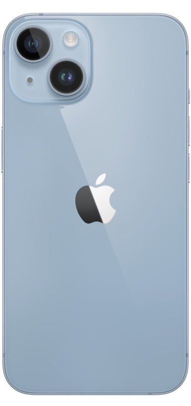

IPHONE 14
En iOS 16 la pantalla de bloqueo te da mucha libertad. Puedes superponer tus fotos al texto para que tengan el protagonismo que merecen, seguir de cerca los anillos de Actividad o enterarte de todo con información en tiempo real de las apps que más usas. Con la transparencia en el seguimiento de las apps tú decides qué aplicaciones tienen permiso para rastrearte. Es solo un ejemplo de cómo el iPhone te ayuda a controlar lo que compartes y con quién.
